Week 2
Day 5
(26.10.2015)
(week 2 is to learn and use all the machines in each day)Today we learn the operation and how to install the "Vinyl Cutter"
Using C Unix Printing System (CUPS 1.7.2) we created a new profile for the vinyl cutter. Case has to be taken while naming the device, it should be "vinyl" and it is case sensitive Then each of us made a design for cutting. I chose to cut out my initial (BG) . Then we were taught how to form a sticker properly and the steps to be followed.
first we type "http://localhost:631/" in a browser. CUPS 1.7.2 window opening.
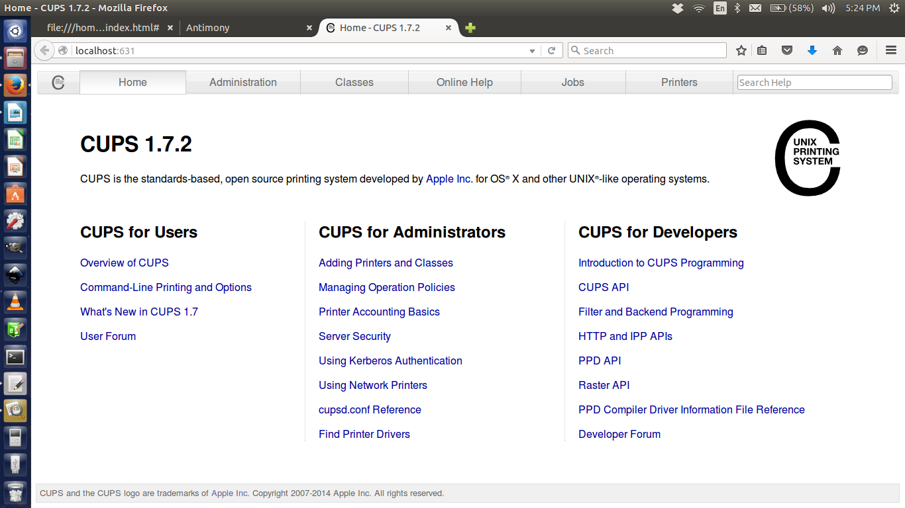
select the "Adding Printers and Classes"(Administrator)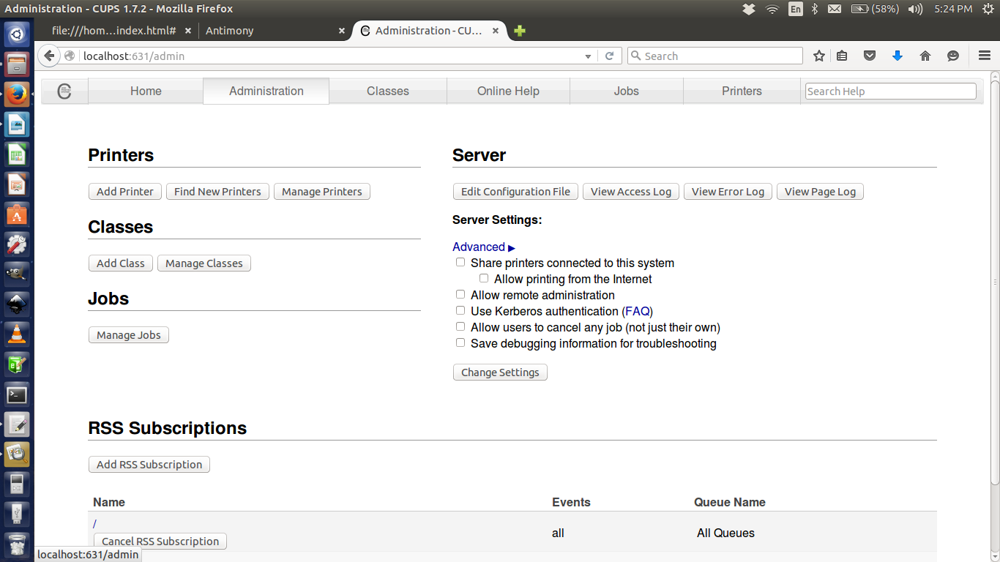
click the "Add Printer"button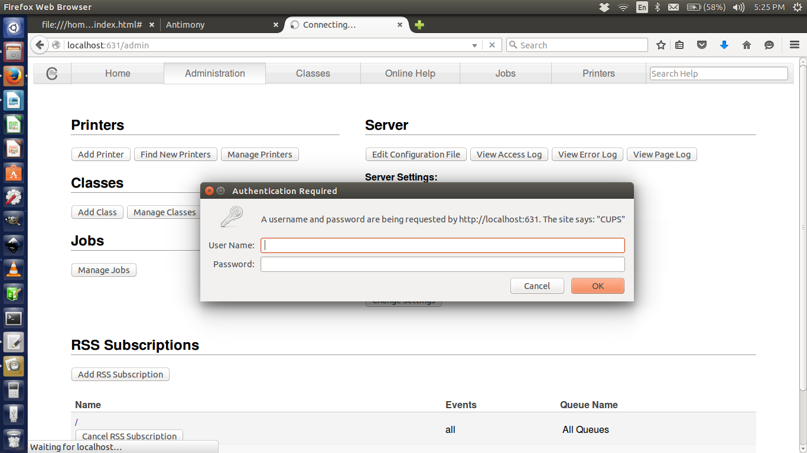
Enter our Admin User Name and Password and select our vinyl printer "usb/Roland/GX-24?serial=EBL8247"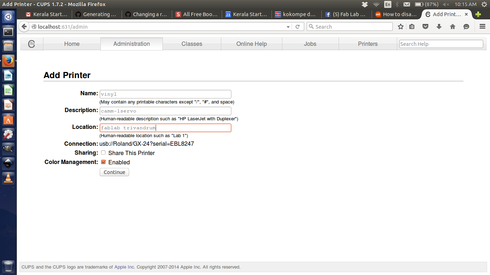
Enter our printer Name "vinyl" and location, Click the "Continue" button

Design Printing
first we start to design a logo and save to .png format.Then go to terminaltype:
"fab" - Enter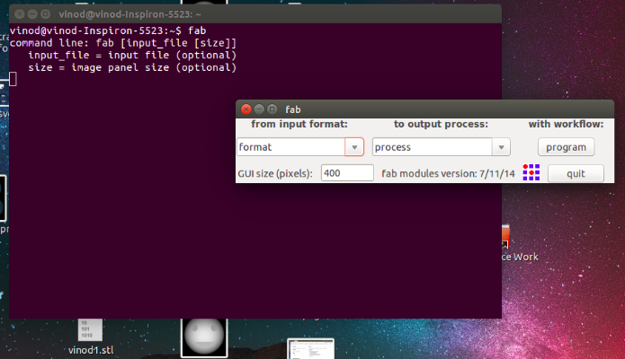
Select the i/p format (.png file)
Select the o/p process (vinyl cutter)
Select the workflow (program)
click the "load.png" button and select our project work(.png).
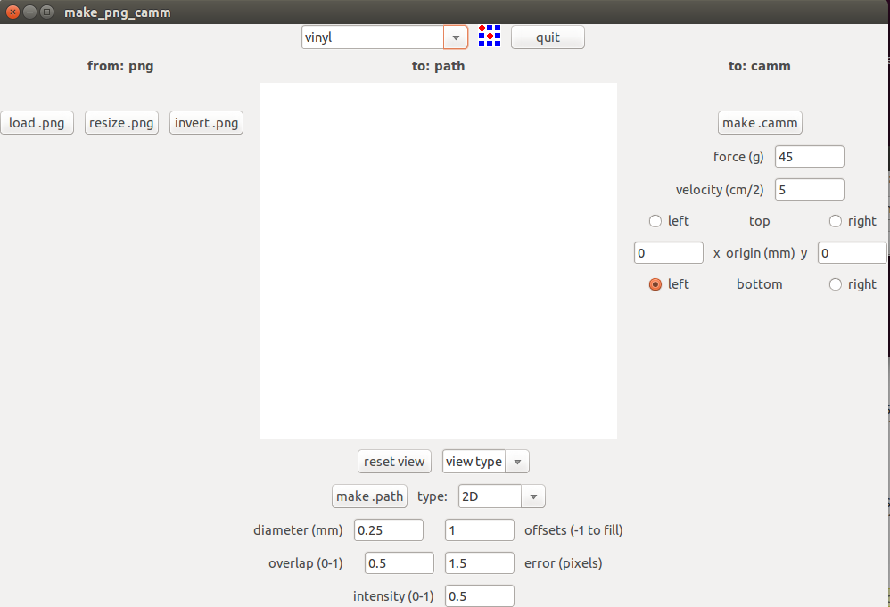
click the "make.path" button and view type select "segments"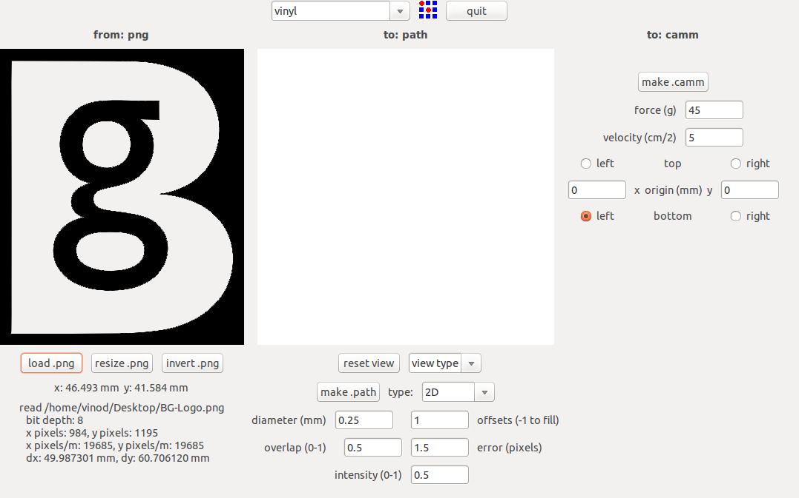
click the "make.camm" button and the project job send it to the vinyl cutter.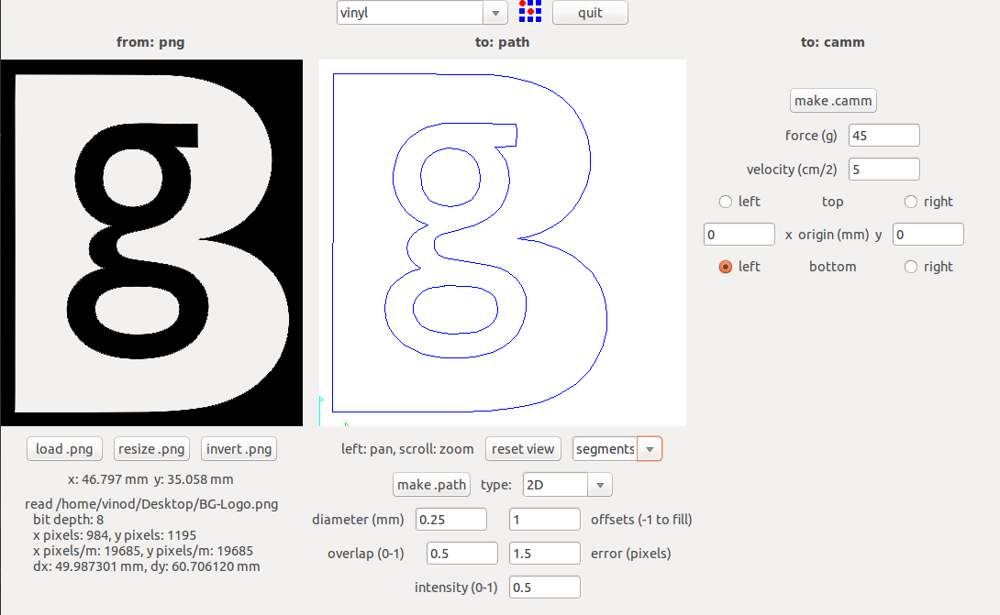

first we check the vinyl sheet loaded properly in the vinyl cutter.we fix the vinyl sheet between the white marked area clse to left side of the vinyl cutter machine.

 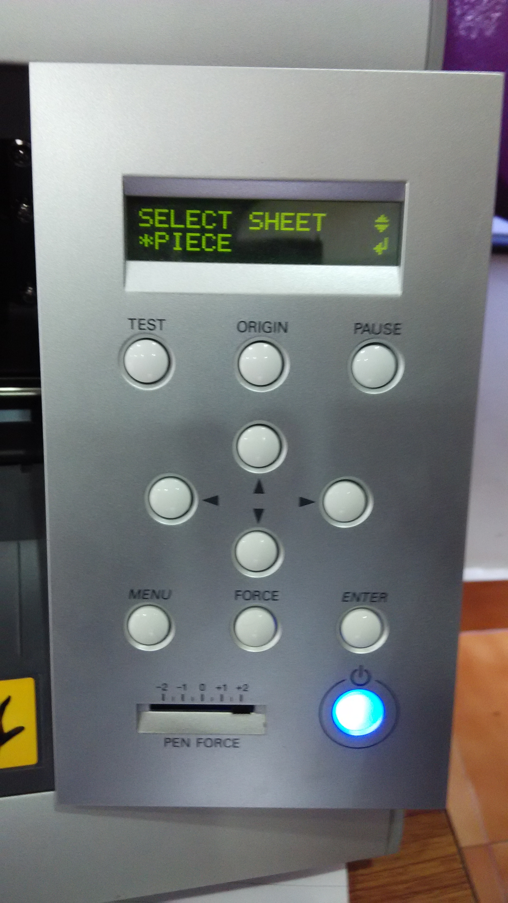
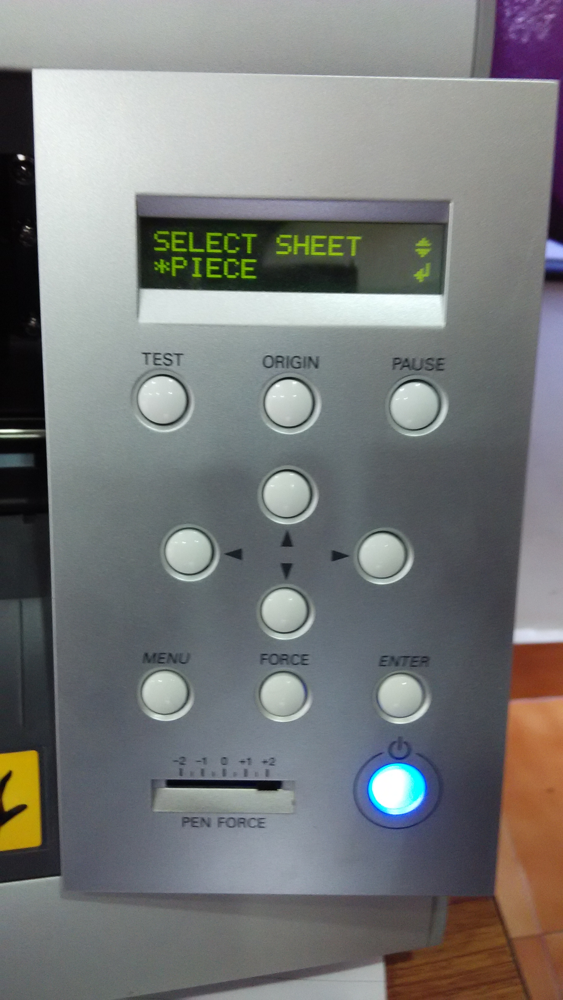
 after selection of sheet we pointing our origin using right,left,up and down key. Once we pointed the origin press and hold (3 seconds) the origin button
after selection of sheet we pointing our origin using right,left,up and down key. Once we pointed the origin press and hold (3 seconds) the origin button
give a test print


 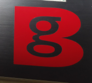
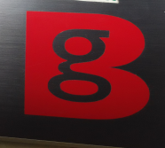
Day 6
(27.10.2015)
Today we learn the operation and how to install the "Laser Cutter".Design was made in Inkscape and then the saved .svg file was copied to the PC connected to the Laser cutter.This has the necessary job control software for the machine installed. The software only runs in Windows OS,so we are switch to computers in windows.First I designed a small chair in a paper then I draw on inkscape software and saved to .svg file. The design was coped and pasted to a pendrive. The pendrive to connect the windows system and the design pasted to the desktop of the computer.Then lasered a cardboard sheet of 3.6mm thickness. By trial and error we determined the cut and engrave speed and power. Make sure that we note down the optimal value are shown bellow.
1st Trialour material 3mm acrylics sheet
job power(%), speed(%), Frequ(Hz)
Engraving 75, 40, 1000
Cutting 100, 10, 8000
Result : it's not cut
2nd Trial
job power(%), speed(%), Frequ(Hz)
Engraving 75, 40, 1000
Cutting 100, 5, 8000
we change the speed 10% to 5%
Result : it's not cut
3rd Trial
job power(%), speed(%), Frequ(Hz)
Engraving 75, 40, 1000
Cutting 100, 1.5, 8000
we change the speed 5% to 1.5%
Result : it's cut
we save the parameter
our laser model is trotec Speedy 100, it is CO2 laser type. the work area is 24x12 inch, laser powe is 12-60 watts. Francisco toled laser is a dangerous machine,risks that may occur.1.generation of fumes, ozone
2.explosions
3.high electrical tension
4.burning and fire
The importance of focal positions in the laser cutting
The laser can handle variations in focus of +/-2.5mm. Once it gets outside this the laser beam becomes wider (less focused) and this results in a thicker cutting line and ill-defined engraving.

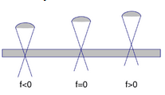
Exact positioning of the focal point is an important requirement for good cutting results.
my project was a chair design

Day 7
(28.10.2015)
Today we learn the operation and how to install the "3D Printer (Ultimaker 2)".We started with Antimony software. Made a 3D design file for keeping the head of the hot blower. Afternoon session was on 3-D printing.
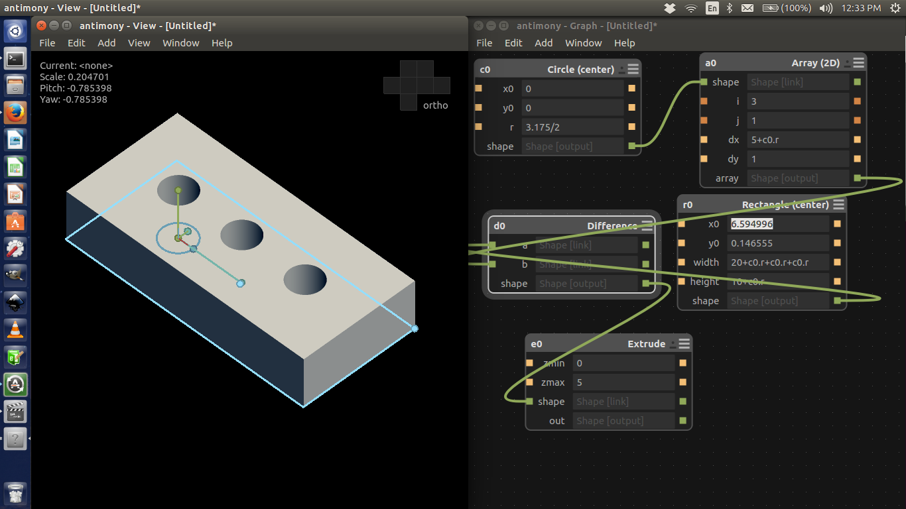


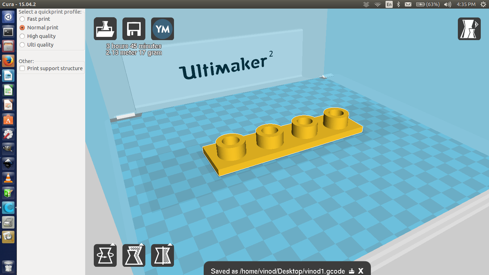
And the file convert .stl to .gcode format and save to an Ultimaker 2 SD card. Print the file using the rotate able Nobe and display.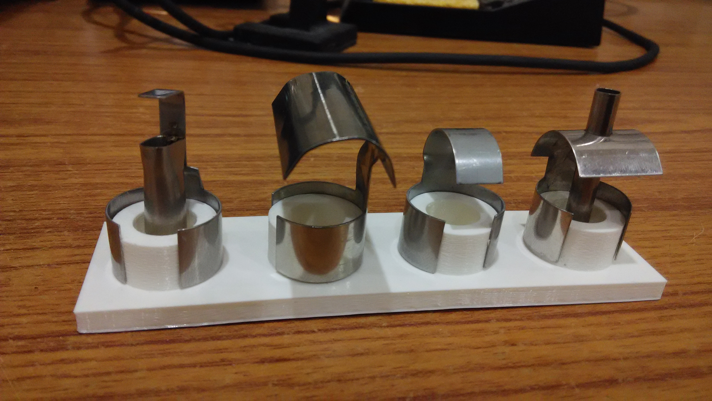

Design: Take care of the leveling of the plate and make the distance between extruder head and the plate optimum. 45 degree is the maximum allowable slope. If it is higher than 45, the software will add support material. We must try to avoid the use of the support material. Positioning of the shape is also very crucial. The orientation will change according to the application of the printed object.
Controllable parameters:
1.speed : slower the better, normal speed 50mm/sec
2.temperature : lower the better, find the minimum temp and use that
3.fill density : lower density saves material but lowers the structural robustness
4.speed in between printing layers. We can make it wait in between layers for the plastic to solidify
5.thickness of the layer : 100 micron is standard. 60 is great, anything below, don't bother. 150 if you are in a hurry
Note : For troubleshooting Ultimaker 2, http://support.3dverkstan.se/article/23-a-visual-ultimaker-troubleshooting-guide#elephant
Day 8
(30.10.2015)
Today we learn the operation and how to install the "Modella".
Milling in Wax Block: Every dimension minus 10mm. That is, height, depth, etc . Take care of the maximum depth you can go while designing according to the size of the milling bit. The parameter in Fab Modules is clearance which take account of the mill length.
We didn't get time to mill as we got stuck in Laser cutting the Modella base. But covered all everything needed to be done in the software side. Important points to be noted are.
Design from antimony has to be exported as heightmap, which is basically .png file.
later came to notice that exporting as .png had some bad effects on the cut, so better export as .stl and use that in fabmodules.
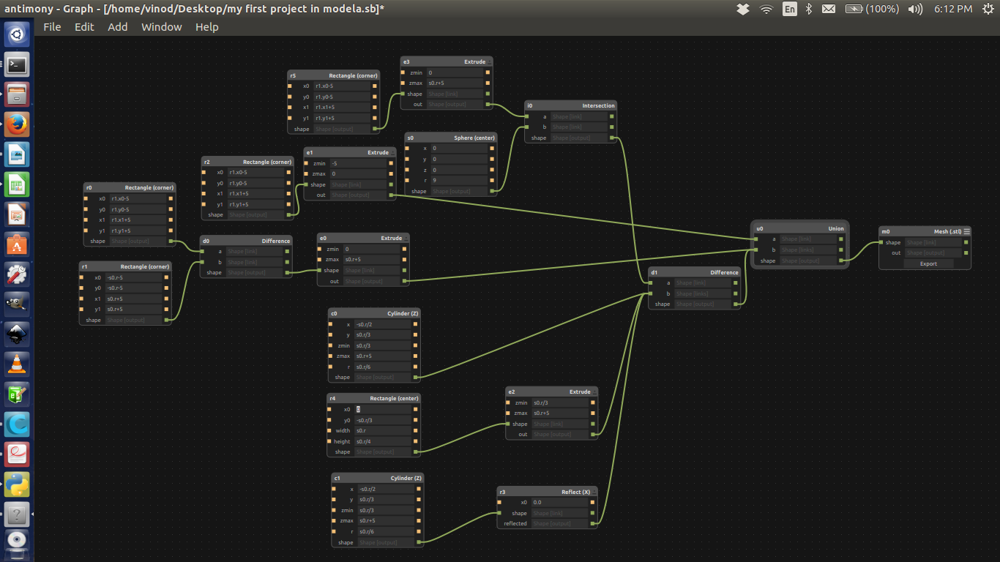

Open fabmodules and give input as .png/.stl and select the Modella as machine.
Afterwards select the exported file and select initially the cut as rough cut and after finishing the rough cut do the final cut.
3,designed and the one shown in fabmodules. If there's any, correct it.
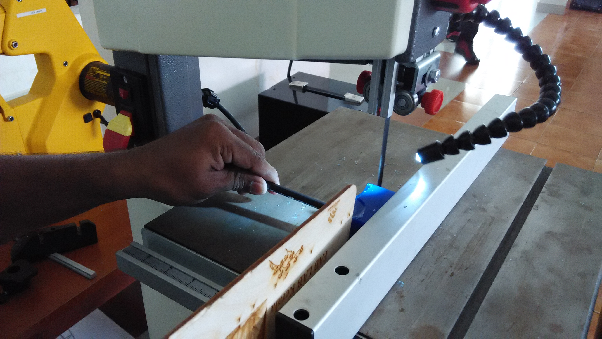
type:
"fab" - Enter
Select the i/p format (.png file)
Select the o/p process (Roland MDX-20 mill(.rml))
Select the workflow (program)
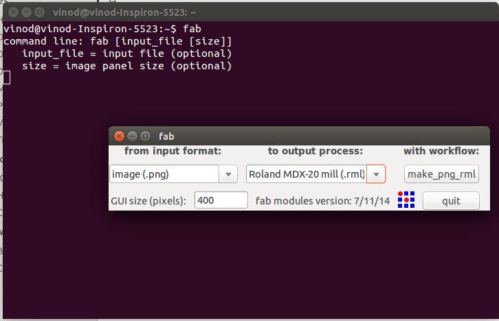
Setting values in fabmodules is as follows
give the right dia od the bit we are using.
give the overlap as .5 rather than .25 which loads as default.
look if their is any disparity in the dimensions of the one you
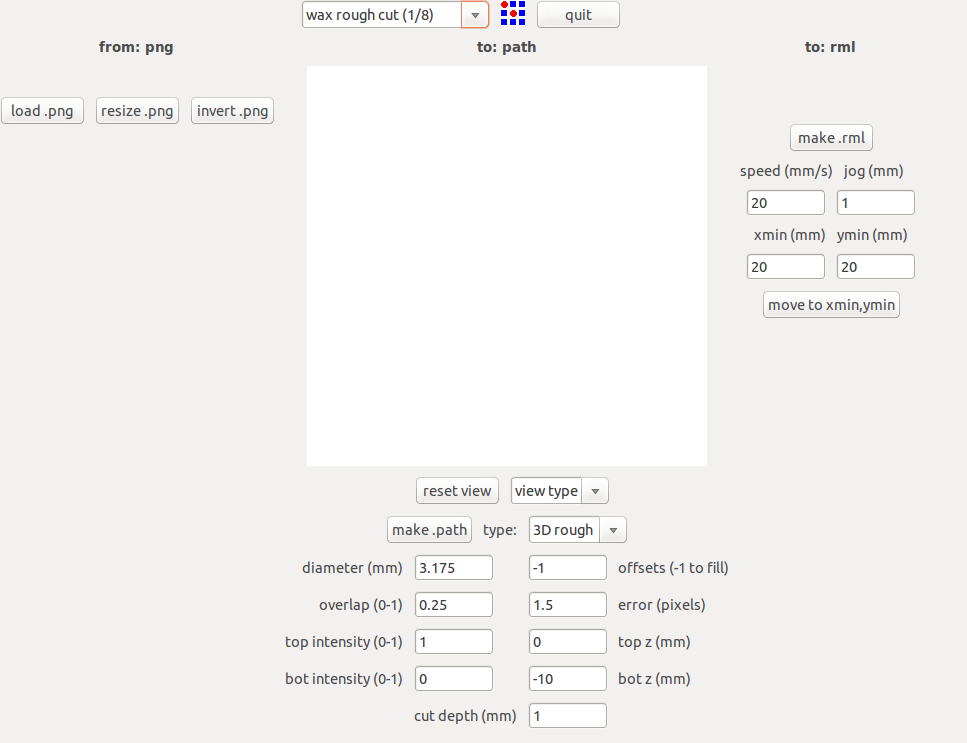
select top first "Wax rough cut (1/8)"click the "load.png" button and select our project work(.png).

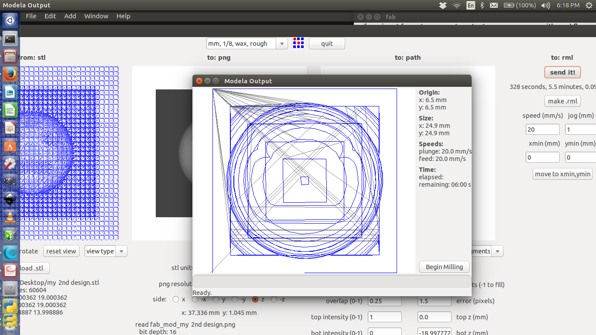
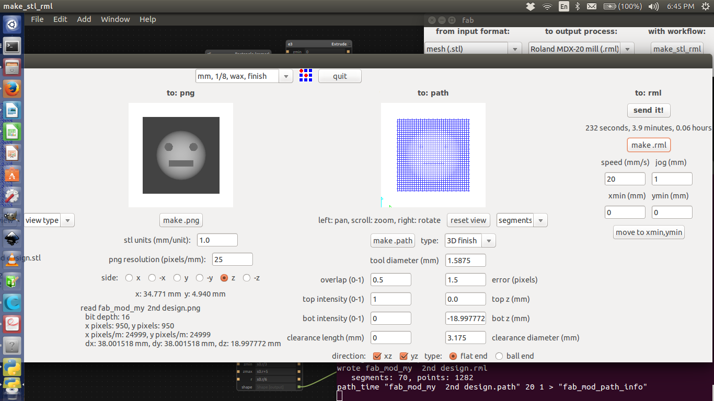

When the milling is over, collect all the milled out wax so that we can use it to make another usable wax block.
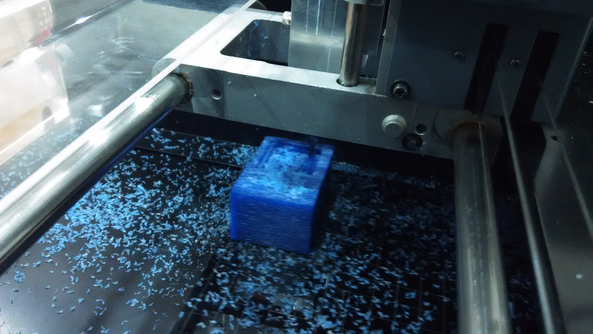
my project out put from Roland MDX-20 mill.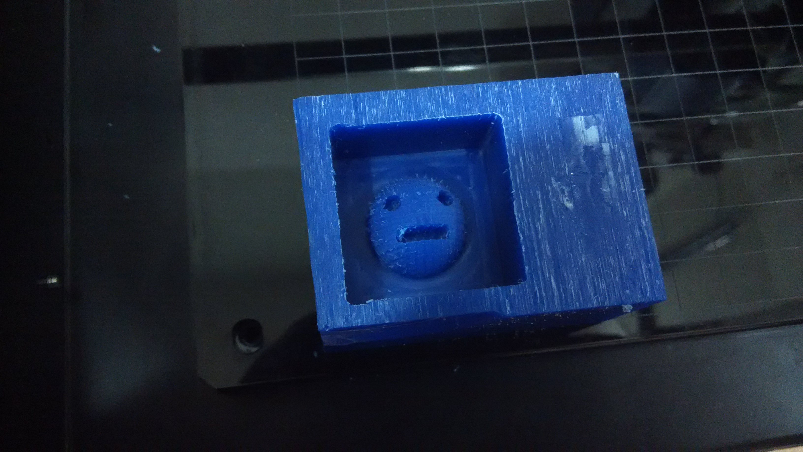
Day 9
(31.10.2015)
Today we learn the operation and how to install the "ShopBot and catchup "Design for milling: day we started with that. Gave a Design done by Puneeth. Reviewed the documentation done by all. Franc told what all needed to be done in extra. Cleared all the doubts/roadblocks preventing documentation. Yesterday I designed the object using the Antimony software